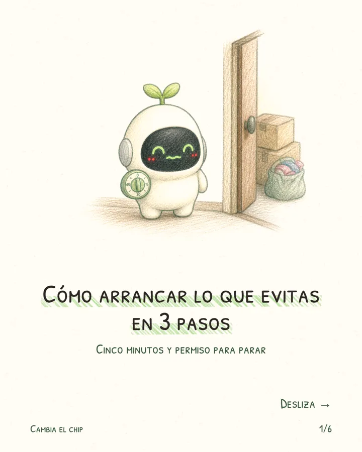

Norday Habits
Marca lo que has hecho hoy y ya está. Constancia, no perfección.
Conócela Norday
Descargar
Norday
Descargar
Norday hace apps tranquilas para llevar tus hábitos. Sin rachas que se rompen y sin culpa. Y con Nori, una mascota que crece contigo.
↓ Baja despacio: Nori está a punto de nacer.
Día 1
Cada hábito que marcas le da experiencia. Se marca con un toque y, si te equivocas, con otro se deshace.
Unas semanas después
Si un día no llegas, no se rompe nada. Tu ritmo baja poco a poco y Nori te espera.
Contigo
Mueve el ratón o el dedo: te está mirando. Si lo dejas tranquilo un rato, se queda dormido.
Cada app de Norday hace una sola cosa, y la hace sin prisas. Nori te acompaña en todas.
Marca lo que has hecho hoy y ya está. Constancia, no perfección.
Conócela
Para concentrarte sin pelearte con el móvil. Todavía está en el huevo.
Apúntate al club fundador
Las ideas de los libros, de una en una y fáciles de llevar a tu día.
Saber másCasi todas las apps de hábitos castigan el día que fallas: la racha a cero, el rojo, el aviso. Norday parte de lo que cuentan los libros sobre hábitos: lo que se queda es lo que repites, no lo que haces perfecto.
Por eso aquí no hay rachas que se rompan. Si te vas unos días, Nori se pone triste; cuando vuelves, se alegra. Nada más.
Nori lee libros de hábitos y lo cuenta fácil en las redes: un carrusel, una infografía, una lámina y una historieta.



Soy Quim. Hice Norday Habits después de dejar cuatro apps de hábitos que me recordaban cada racha rota. Quería una que me acompañara sin reñirme. Cuento cómo la construyo en LinkedIn y leo todos los correos.
Norday Habits es gratis, sin anuncios y sin compras. Para Android.